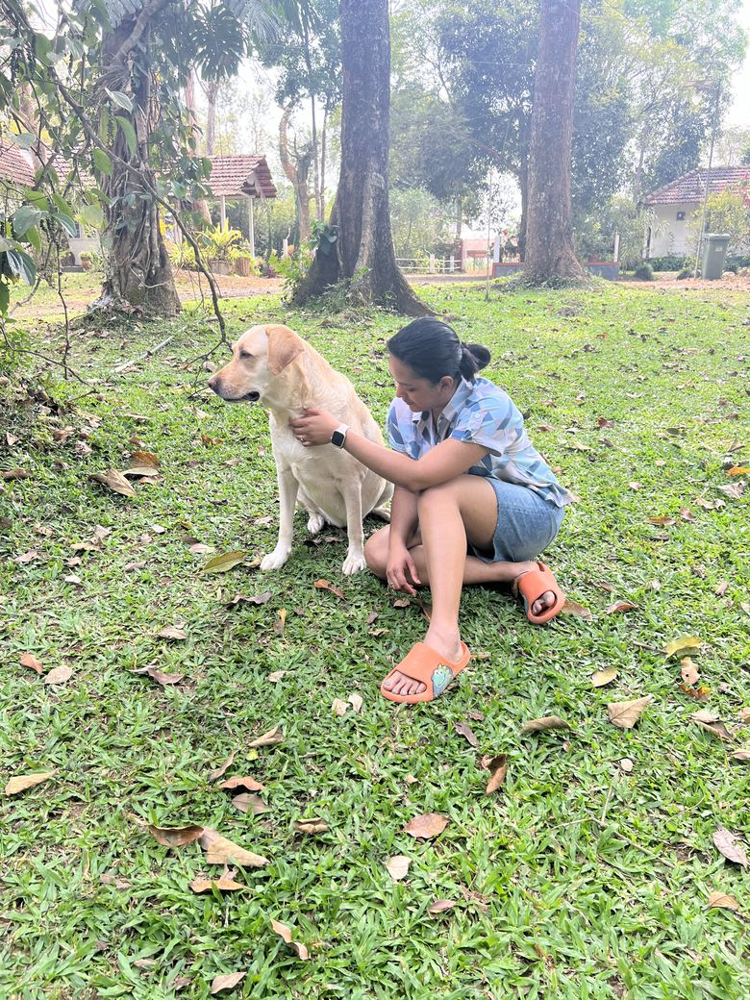
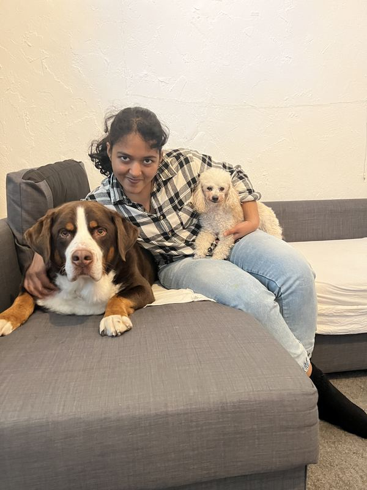
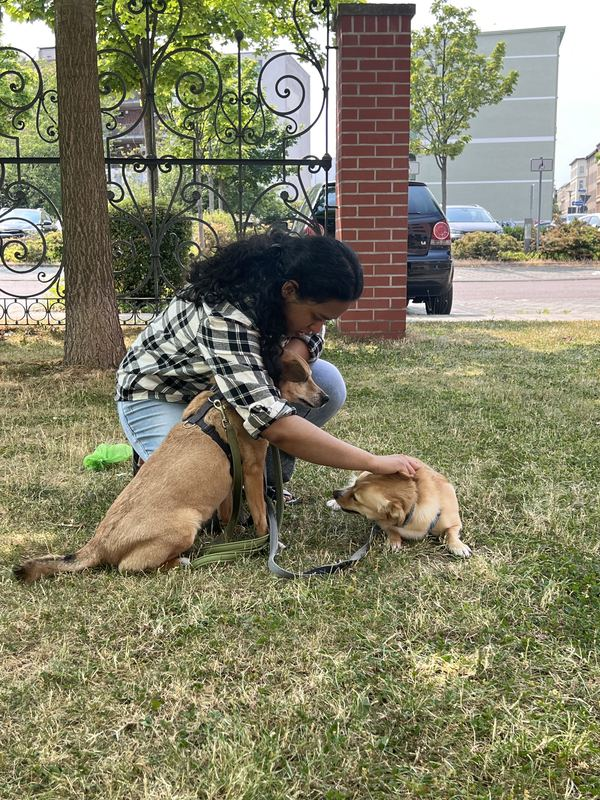
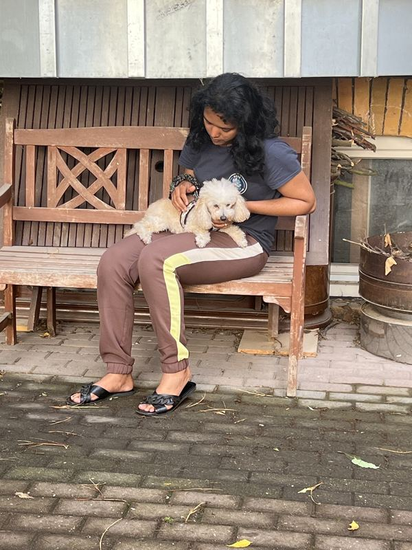
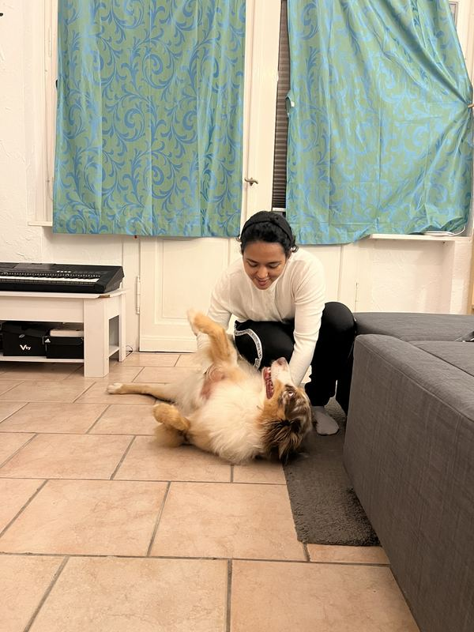
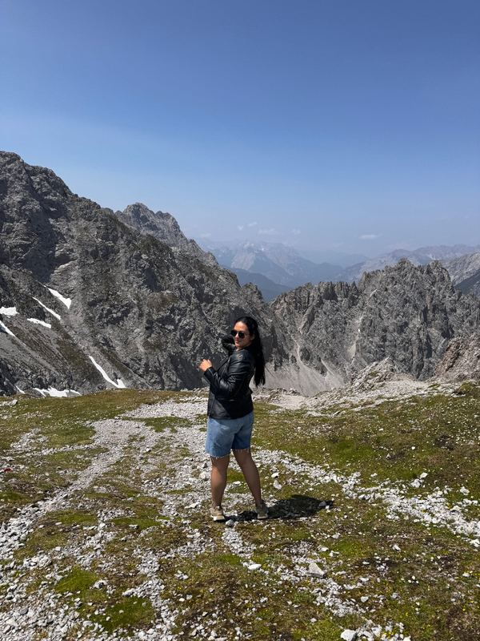
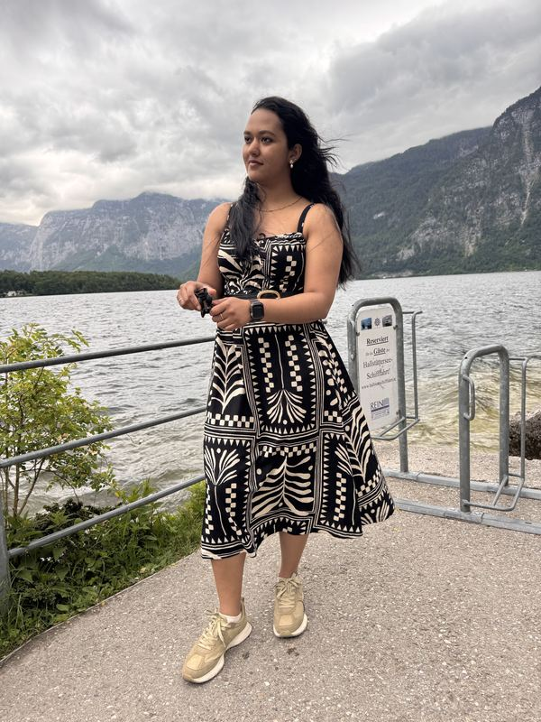
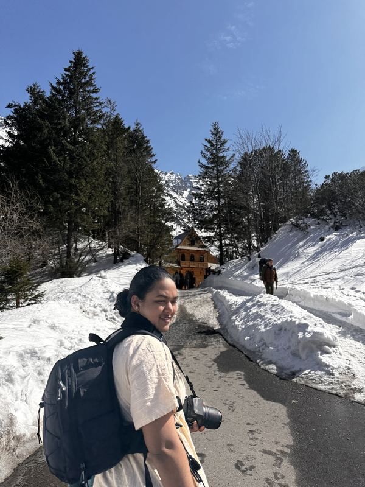
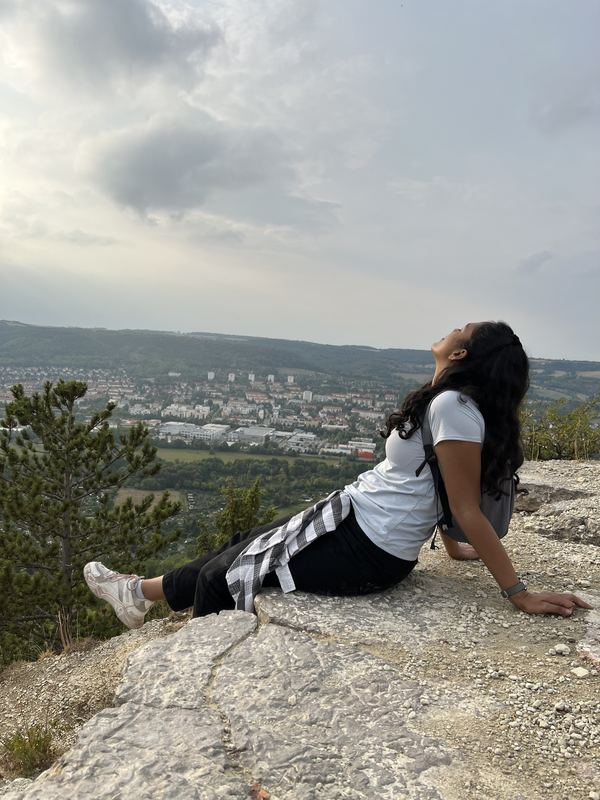
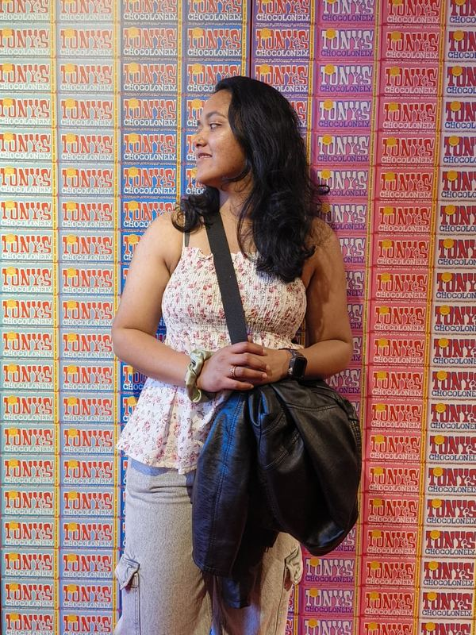

I work in the Mobile DNA lab of Zsuzsanna Izsvák at the Max Delbrück Center, where I build the pipelines that turn sequencing data into results the lab can use.
Most of my time goes into whole-genome sequencing, bulk RNA-seq and ChIP-seq analysis, and into mapping where Sleeping Beauty transposons integrate in the genome. I studied bioinformatics first and molecular biotechnology afterwards, so I have worked on both the computational and the wet-lab side.
I am moving towards machine learning for genomics. What I want in the end is to build methods that are useful in healthcare, where a patient's molecular data helps to understand their disease or choose their treatment. The first project below is my first step in that direction.
Projects
Do BulkRNABert embeddings know which tissue a cell line comes from? Machine learning side project at the MDC, 2026
What I did
BulkRNABert is a transformer model pretrained on tumour RNA-seq data. I ran it on 1,657 cancer cell lines from DepMap and asked whether its embeddings separate the 26 tissue lineages better than plain PCA on gene expression. A colleague set me this task to test my skills, and I did it alongside my lab work.
Skills I used and learned
Python (NumPy, pandas, scikit-learn), model inference in JAX/Haiku, Apptainer containers, SLURM. New for me: running a pretrained transformer, matching my data to a model's fixed gene vocabulary, and evaluating embeddings with cross-validation against a simple baseline.
Outcome
The embeddings are worse than the baseline. With a kNN classifier they reach a balanced accuracy of 0.40, and PCA on the 2,000 most variable genes reaches 0.60. The gap depends strongly on the lineage: lymphoid and lung cell lines are classified almost equally well by both, whereas pancreas, kidney and pleura are lost in the embedding.
Limitations
I only ran the model; I did not train or fine-tune it. I tested one way of pooling the embeddings and one layer, and one task. The model was trained on tumours and I applied it to cell lines, which may explain part of the gap.
ChIP-seq of a transcription factor in human embryonic stem cells Mobile DNA lab, MDC, 2026
What I did
I built the analysis for a ChIP-seq experiment from raw reads to annotated binding sites: alignment, quality control, peak calling on replicates, consensus peaks, annotation against genes and repeat families, and motif analysis. Because the lab studies repeats, I kept reads that map to several places in a separate track instead of discarding them.
Skills I used and learned
BWA, samtools, MACS3, deepTools, HOMER, bedtools, SLURM, micromamba environments. New for me: judging whether a weak ChIP is real. I learned to use a failed replicate as a control for library bias, to compare against shuffled regions, and to let the motif result decide when promoter peaks could be artefacts.
Outcome
A documented pipeline with one script per step and a decision log, which the lab can rerun on the next round of samples. The biological results are unpublished and belong to the lab, so I do not describe them here.
Limitations
The experiment had no IgG control and the enrichment was low, so the conclusions rest on replicate agreement and motif enrichment. Reproducibility between replicates was judged by overlap, without a formal IDR analysis.
GAPDH as an RNA-binding protein in acute myeloid leukemia Master's thesis, Max Planck Institute of Molecular Physiology, 2024 to 2025
What I did
GAPDH is known as a metabolic enzyme, but it also binds RNA. In my thesis I combined CLIP-seq data, which shows which RNAs GAPDH binds, with RNA-seq data after GAPDH knockdown, which shows which RNAs change, and followed up selected targets by qPCR.
Skills I used and learned
R workflows for RNA-seq and CLIP-seq, differential expression, qPCR, cell culture. New for me: working on one question with both bench and computer, and taking an analysis through to a published figure.
Outcome
The work is part of a paper in RNA Biology (2025). The study found that GAPDH binds its targets mainly in the 5' untranslated region, including its own mRNA, and stabilises them.
Limitations
The experiments were done in leukemia cell lines, not in patient samples.
Looking for viruses in a plant metagenome Master's dissertation, Rajiv Gandhi Centre for Biotechnology and Manipal, 2021
What I did
I took a public shotgun sequencing dataset of wild Arabidopsis thaliana leaves and searched it for viral sequences: quality control and trimming, removal of plant reads, de novo assembly, BLASTx against a viral protein database, and taxonomic classification. I also compiled a list of new plant viruses reported in metagenomic studies from 2015 to 2021.
Skills I used and learned
FastQC, Trimmomatic, Bowtie2, metaSPAdes, BLAST+, MEGAN, Galaxy. This was my first complete analysis from raw reads to a result. When the search was too large for Galaxy, I learned to set up a cloud server and run BLAST from the command line.
Outcome
Of 55,364 assembled contigs, 4,132 were assigned to viruses, covering 13 families. With a strict score threshold three families remained, two of them bacteriophages. I found no new virus.
Limitations
I analysed one of the samples in the study, mostly with default settings, and nothing was validated in the lab. The data was DNA sequencing, which cannot detect the RNA viruses that make up most plant viruses.
How I got here
- 2016 to 2019
- B.Sc. in chemistry, botany and zoology at Mahatma Gandhi Memorial College. Biology only, no code yet.
- 2019 to 2021
- M.Sc. Bioinformatics at Manipal School of Life Sciences. This is where I learned to program and first worked with sequencing data: for my dissertation I searched a public plant metagenome for viruses.
- 2022 to 2025
- M.Sc. Molecular Biotechnology at Anhalt University of Applied Sciences. I went back to the bench to understand how the data I analyse is made: PCR, cell culture, CRISPR.
- 2024 to 2025
- Max Planck Institute of Molecular Physiology, Dortmund. For my thesis I studied how the enzyme GAPDH binds RNA in acute myeloid leukemia, combining RNA-seq and CLIP-seq data. It was my first time inside a research project from experiment to paper, and it led to two research papers.
- 2025
- Joined the Max Delbrück Center. Here I learned to write analysis that other people depend on: pipelines that run on a cluster and give the same answer twice.
- 2026
- First machine learning project, the BulkRNABert evaluation at the top of this page. The main thing it taught me is how easily a model runs without errors on wrongly prepared input, and how much checking that takes.
- Next
- Learning to train my own deep learning models in PyTorch, so that I can build such methods myself.
Publications
- Shamloo S, Schloßhauer JL, […], Bejoy AM, […], Imig J. RNA binding of GAPDH controls transcript stability and protein translation in acute myeloid leukemia. RNA Biology, 2025. doi:10.1080/15476286.2025.2580180
- Schlösser V, Lightfoot HL, Leemann C, Banijamali SE, Bejoy AM, et al. Anti-HIV-1 effect of the fluoroquinolone Enoxacin and modulation of pro-viral hsa-miR-132 processing in CEM-SS cells. Non-Coding RNA, 2025. doi:10.3390/ncrna11010008
- Bejoy AM, et al. An insight on advances and applications of 3D bioprinting: a review. Bioprinting, 2021.
Outside work I am mostly with dogs or on the way to somewhere new.
Alongside my studies I worked part-time at McDonald's, Subway, Kamps and Amazon.
My next goal is to run a marathon.
Dogs
I love dogs. The Labrador is my own. The others are dogs I looked after while I was studying in Germany.





Travel
So far: Switzerland, the Netherlands, Belgium, Poland, Qatar, Italy, Vatican City, Austria and Luxembourg. The list will continue.




